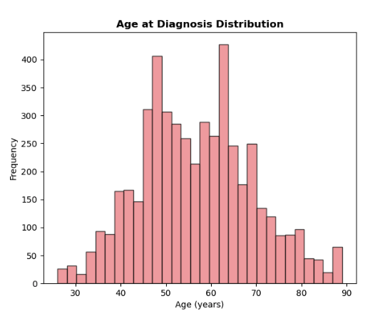
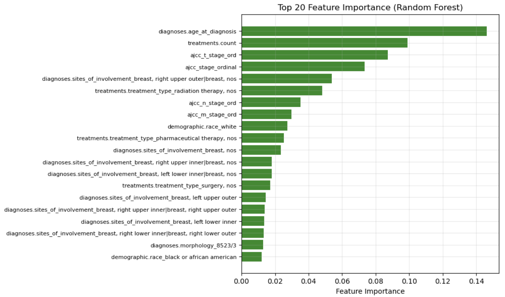
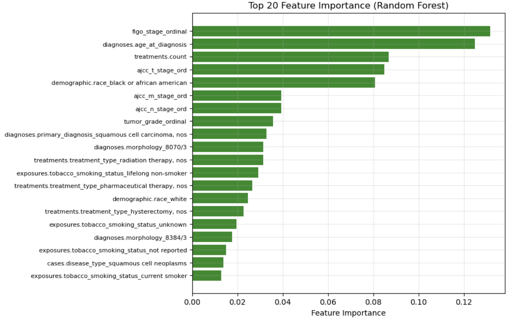

Understanding Breast and Cervical Cancer: Patient Outcomes and Survival Patterns
Executive Summary
Our study examines breast and cervical cancer data from the Cancer Genome Atlas (TCGA) using records from over 1200 patients. Our goal is to identify factors related to survival and explore if any distinct patient groups emerge from the available clinical and demographic data. Throughout the study, we came across several key findings. Overall, breast cancer patients had a higher mortality rate than cervical cancer patients, with 14% versus 7% mortality rates. When analyzing patients that died, cervical cancer patients tend to die much sooner than breast cancer patients. The most influential factors were age at diagnosis and treatment characteristics, with early stage diagnosis significantly associated with longer survival for both cancer types.
About the Study
After cleaning and de-duplicating the TCGA dataset, our final dataset contained 1081 breast cancer patients and 184 cervical cancer patients, with average ages of 58 and 47 years, and average survival times of 3.6 and 2.8 years, respectively. The variables we considered were age at diagnosis, cancer stage, treatment information, and vital status. We analyzed survival outcomes after clustering but did not use vital status to create patient groups.
Who Are our Patients?


The average breast cancer patient in our study is 56 years old, with 70% white and approximately 20% Black/African-American patients. 85% of the patients were alive at their last checkup and had received treatment. Most tumors in our breast cancer group were discovered at stage two, because early stage breast cancer does not present any symptoms, and late-stage cancers are typically more severe. Compared to our breast cancer patients, the cervical cancer patients had a younger average age of 47 years. Most were diagnosed at stage one, indicating the efficacy of cervical cancer screening programs such as Pap smears. In our cervical cancer group, 93% of patients were still alive at the follow-up.
What We Discovered


The most surprising discovery we made was that breast cancer had a twofold higher mortality rate than cervical cancer, but cervical cancer patients who did die died much sooner after diagnosis. After diagnosis, breast cancer patients lived an average of 4.3 years, while cervical cancer patients lived an average of 1.8 years, demonstrating that cervical cancer can be life-threatening when it is aggressive. Older breast cancer patients have shorter survival times, while older cervical cancer patients appear to survive longer. Regardless of cancer type, patients diagnosed at stage one lived longer than those diagnosed at later stages, with a particularly large difference in survival time between stage one and stage three. Breast cancer patients under the age of 70 who received treatment had a higher survival rate, whereas breast cancer patients over the age of 70 had similar outcomes regardless of whether they received treatment. This highlights the importance of regular cancer screenings such as mammograms and Pap smears. Immunotherapy produced the best results for breast cancer patients, followed by chemotherapy. Radiation combination therapy produced the best results for cervical cancer patients.
Can we predict survival?

Our study used machine learning models to predict how long patients would live based on the clinical information we had. Our best model predicted survival times that were within two years of the actual outcomes. Because the outcomes of these cancers are highly variable, some patients live for many years while others live for much shorter periods of time, the model captures broad patterns but cannot predict precisely at an individual level. There were four important factors for predicting survival: age at diagnosis, cancer stage, number of treatments, and treatment type. Younger patients had better outcomes, earlier cancer stage meant longer survival, more treatments correlated with different outcomes, and specific therapies produced better results. We also investigated whether smoking affected cervical cancer outcomes, but could not draw conclusions about the effects on survival. The majority of our patients reported that they did not smoke.
We combined our data to see if there were any clustering patterns, and our analysis identified three groups of patients: group one had 100% breast cancer patients with a 14.7% mortality rate and an average survival of 3.7 years; group two had 100% breast cancer patients with a 12.3% mortality rate and an average survival of 2.8 years; and group three had cervical cancer patients with a 7.1% mortality rate and an average survival of three years. These cluster groups reflect cancer types, which makes clinical sense, demonstrating that breast and cervical cancer require different approaches and treatments.
Technical Report
Model Results
We evaluated three distinct machine learning approaches for predicting cancer patient survival times across both breast cancer (BRCA) and cervical cancer (CESC) datasets:
Breast Cancer (BRCA) Results
======================================================================
FINAL MODEL COMPARISON
======================================================================
Model MAE RMSE R²
Standard Linear Regression 7.691527e+12 6.158508e+13 -2.406669e+21
Parametric Curve Fitting 1.288540e+03 1.798930e+03 -1.053500e+00
Random Forest Regressor 7.924000e+02 1.156060e+03 1.519000e-01
======================================================================
BEST MODEL: Random Forest Regressor
Achieved lowest MAE of 792.4 days
======================================================================Best Hyperparameters for Random Forest (BRCA):
- n_estimators: 300
- max_depth: None
- min_samples_split: 5
- min_samples_leaf: 1
- max_features: 0.3
- bootstrap: True
- Best Cross-Validation MAE: 755.05
- Out-of-Bag Score (R²): 0.1786
Cervical Cancer (CESC) Results
======================================================================
FINAL MODEL COMPARISON
======================================================================
Model MAE RMSE R²
Standard Linear Regression 960.32 1268.35 -0.8628
Parametric Curve Fitting 887.97 1285.33 -0.9130
Random Forest Regressor 730.73 921.17 0.0174
======================================================================
BEST MODEL: Random Forest Regressor
Achieved lowest MAE of 730.73 days
======================================================================Best Hyperparameters for Random Forest (CESC):
- n_estimators: 500
- max_depth: 10
- min_samples_split: 2
- min_samples_leaf: 2
- max_features: log2
- bootstrap: True
- Best Cross-Validation MAE: 709.13
- Out-of-Bag Score (R²): 0.0970
Model Performance Analysis
Random Forest consistently emerged as the superior model for both cancer types, achieving the lowest Mean Absolute Error (MAE) in both cases. This success can be attributed to several key factors:
Non-linear Relationship Capture: Cancer survival involves complex, non-linear interactions between clinical variables that Random Forest effectively models through its ensemble of decision trees.
Robust Feature Handling: The algorithm naturally handles mixed data types (categorical staging variables, continuous age/treatment counts) without extensive preprocessing requirements.
Overfitting Resistance: The ensemble approach and bootstrap sampling provide built-in regularization, preventing overfitting to training data patterns.
Feature Importance: Random Forest provides interpretable feature importance scores, crucial for clinical applications where understanding driving factors is essential.
The Standard Linear Regression showed severe overfitting in the BRCA dataset (extremely high MAE and negative R²), while Parametric Curve Fitting with Lasso regularization performed moderately but still struggled with the complex, non-linear nature of cancer survival patterns.
Discussion


Our Random Forest models revealed distinct but complementary patterns in feature importance across cancer types, with age at diagnosis consistently emerging as a top predictor for both BRCA and CESC cohorts, reflecting well-established clinical evidence linking advanced age to poorer outcomes due to comorbidity burden and aggressive tumor biology. In breast cancer, the model identified treatment counts and comprehensive tumor staging variables (T, N, M, overall stage) as critical predictors, with spatial descriptors and treatment modalities (radiation, pharmaceutical therapy) collectively explaining over 60% of predictive power, suggesting that survival is dominated by disease extent and treatment intensity. Cervical cancer analysis revealed FIGO staging as the overwhelmingly dominant predictor, consistent with its central role in clinical decision-making, while age, treatment counts, and demographic variables (including race) comprised secondary but important factors, with the top ten features accounting for over 68% of model importance—indicating more concentrated predictive factors than in breast cancer. Notably, despite tobacco exposure being a known cervical cancer risk factor, smoking-related variables did not appear among top predictors, likely due to dataset limitations including predominant non-smoker representation and potential underreporting, highlighting the critical role of data completeness in model performance and clinical interpretation.
These results reinforce why cervical cancer screening is recommended to start earlier at age 21 compared to breast cancer (after 30 for high risk individuals)1 2 . However, cervical cancer prevention efforts receive less public visibility than breast cancer campaigns and tying the campaigns together could help catch cervical cancer earlier in the population3 . This could improve survival time as the tumor stage is the dominant predictor for cervical cancer in our findings and cervical cancer has a lower survival rate of 66% compared to that of breast cancer (90%)4 .
Future Improvements
Several technical enhancements could significantly improve our cancer survival prediction models:
Data Enhancement
- Multi-modal Integration: Incorporate genomic data, imaging features, and proteomics to create a more comprehensive patient profile
- Temporal Modeling: Include longitudinal treatment response data and biomarker changes over time
- External Validation: Test models on independent datasets from different institutions to assess generalizability
Advanced Modeling Techniques
- Deep Learning Approaches: Implement neural networks specifically designed for survival analysis (DeepSurv, DeepHit)
- Ensemble Methods: Combine multiple algorithms using stacking or voting approaches for improved robustness
- Survival-Specific Models: Utilize Cox Proportional Hazards models or accelerated failure time models designed for time-to-event data
Feature Engineering
- Interaction Terms: Systematically explore clinically meaningful feature interactions (e.g., stage × treatment combinations)
- Derived Biomarkers: Create composite scores from multiple clinical variables
- Time-Varying Covariates: Model how patient characteristics change during treatment
Model Optimization
- Hyperparameter Optimization: Implement Bayesian optimization or genetic algorithms for more efficient parameter tuning
- Cross-Validation Strategy: Use stratified or time-series cross-validation appropriate for clinical data
- Uncertainty Quantification: Implement confidence intervals and prediction uncertainty estimates for clinical decision support
Clinical Integration
- Interpretability Tools: Develop SHAP (SHapley Additive exPlanations) or LIME explanations for individual patient predictions
- Risk Stratification: Create clinically meaningful risk categories rather than continuous predictions
- Real-time Deployment: Build APIs for integration into electronic health record systems
Evaluation Metrics
- Clinical Relevance: Include clinically meaningful metrics like concordance index (C-index) for survival models
- Subgroup Analysis: Evaluate model performance across demographic and clinical subgroups to assess fairness
- Calibration Assessment: Ensure predicted survival probabilities match observed outcomes across risk levels
Conclusion
Our analysis revealed significant patterns in cervical cancer outcomes, and while these two cancers affect women. Their behavior is quite different in general breast. Cancer may be more fatal, but cervical cancer may be rapidly aggressive when it becomes life-threatening. Our data consistently points to one message: early detection saves lives. This includes her patience receiving regular screenings, understanding your stage, and thoroughly discussing treatment options with healthcare providers. This means that patients with cervical cancer who demonstrate signs of progression may require more aggressive monitoring. Age plays an important role in treatment decisions, and comprehensive data collection, particularly around lifecycle factors, would improve the ability to understand and predict outcomes.